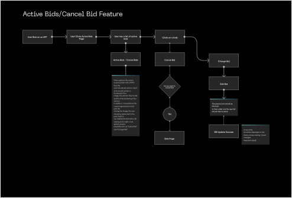
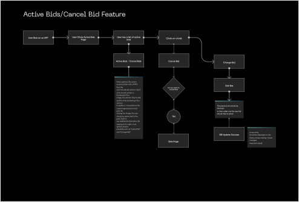

Back
Social NFT Trading Platform
Funge Platform represents a sophisticated and dynamic social NFT marketplace that offers users a seamless and comprehensive ecosystem for the acquisition, sale, and creation of NFTs. Notably, it leverages the robust capabilities of the Polygon blockchain to provide an optimized experience, characterized by exceptionally low transaction fees.
This platform serves as a nexus for individuals passionate about non-fungible tokens, fostering a thriving community of collectors, creators, and enthusiasts. Funge Platform's integration with the Polygon blockchain ensures that users can transact with minimal overhead costs, making it an attractive choice for those seeking cost-effective NFT interactions within the blockchain space
- To design an NFT platform with a social media approach where users can buy, sell and create NFTs
- To create a Wallet system where users can buy and pay for their assets via credit cards, debit cards and Polygon.
- A learning and rewards system
- User can create an auction for any scarce digital content.
- User can also create a raffle NFT post.
I held the role of Product Designer, responsible for conceiving and crafting the entire user experience from its inception. Throughout the project's lifecycle, I fostered collaboration and synergy among key stakeholders, including product managers, engineering teams, and customer service teams.

Problem

Approach & Process

Result
PROBLEM
The first version of the Funge platform was launched on Android at the MVP stage as a mere NFT market place for buying and selling of NFTs. However there was need to further expand on the scope of the solution based on increased user needs which were gathered from research and user feedbacks. Other than having just a market place, the client wanted to create a more engaging experience between buyers and sellers on the platform while keeping the UX simple enough for any level of user.
APPROACH
Firstly, I requested access to the following;
- The existing MVP mobile application
- The feedbacks from community users of the application
- The access to the community on Discord
- A comprehensive roadmap
I had a demo run through of the existing application end to end on android to understand how the application functioned. This assisted me to map out the existing flow accordingly


- I conducted a preliminary assessment of the existing user interface within the application, focusing on a comprehensive review of various visual elements. This evaluation encompassed an examination of aspects such as color schemes, design systems, alignment, hierarchy, typography, and page readability, among others.
- I conducted a comprehensive evaluation of the application's functionality, systematically testing various features by attempting to execute a range of tasks. This examination allowed me to discern areas of effectiveness, identify areas requiring enhancement, and pinpoint aspects that exhibited complete non-functionality.
- One of my primary focal points was the assessment of accessibility, with a particular emphasis on ensuring compliance with global accessibility standards for the Funge app. Given that I was also tasked with a comprehensive visual overhaul, I meticulously documented any instances where the application fell short of these accessibility guidelines.
- As I navigated through the app's user experience, I dedicated myself to meticulously mapping out the pre-existing user flows. Concurrently, I took particular care to delineate elements of the application that appeared to introduce complexity into the user experience.
There was a need to understand the existing users and what their experiences were with the previous MVP version of the Funge Application and I did this by leveraging the feedback channel in the Funge community discord Channel. Below are some of the extracts from there;
.svg)
To gain deeper insights into user preferences and ascertain their genuine needs, I initiated a concise survey among our community members. I devoted a significant amount of time and attention to carefully formulating the survey questions to ensure they accurately captured the specific information I sought
 Key Findings
Key Findings
110 persons responded and Here are some Key Insights from the Survey
- Users at the beginner level complained of a complex experience while using other competitor platforms
- 87.7% of users complained about spending on high gas fees when purchasing NFTs.
- 62.1% of users wanted a marketplace that Supports several blockchains
- Users also complained about the search feature being really bad, and it was really hard to find NFT collections unless you have a direct link to it.
- About 56.8% Users found the current platform to have low readability.
There were other findings such as being able to receive latest news, P2P trading, community forum (more like bitcointalk experience), Rarity tools, etc.
I created three different user personas to represent three set of users which were ; Newbies in the Web 3 space; Creators, Buyers and Sellers of NFTs
.svg)
Through the survey, I successfully identified several competitors in the Funge NFT Marketplace space. Subsequently, I conducted a succinct yet comprehensive competitive analysis, focusing on discerning their strengths and pinpointing opportunities for capitalizing on their weaknesses. Among the noteworthy competitors that I examined included
- Openseas
- Looksrare
- Rarible

Having direct insights from Funge community members played a pivotal role in shaping the bedrock of our primary research efforts. Guided by the principles of User-Centered Design, we delved deep into uncovering user pain points. Through our primary research, we gained valuable insights into the early users' experiences with the MVP and gained a sense of their initial expectations.
Moreover, the primary research facilitated a crucial alignment between the business objectives and user needs. This alignment proved instrumental in our endeavor to prioritize feature development, a critical task given our time constraints.
Once I had acquired a comprehensive understanding of our user base and their specific needs, it became imperative to establish strategic pathways for the generation of potential solutions. In this regard, I took the initiative to lead a live brainstorming session using the Miro platform, which included active participation from all team members, including stakeholders and our engineering team. Some of the key touch points addressed during this collaborative session included:
- We analysed the research data, sorted out user painpoints and mapped out solutions. Even though we were able to address every painpoint specifically there were some that were heavily dependent on the financial market index and existing conventions and as such it was extremly difficult to establish full control over.
- We discussed on the Polygon blockchain and defined flows for new features accordingly. We also did an overhaul of the existing features end to end and we were able to restructure the flows.
- We had some live sketching rounds and I was able to gather different perspetives and suggestions from other team members.
- I also led a live moodboarding session on MIRO where every team member contributed to the visual experience.
Having meticulously collected essential insights through multiple rounds of idea exchange, moodboarding, and sketching, I proceeded to construct the user flows for the various use cases and features. To ensure clarity and ease of comprehension, I divided these user flows into manageable sections, avoiding unnecessary complexity. While I cannot present the entirety of the flow diagrams here, I have included select components below for reference
.svg)
.svg) 


To commence this phase of the design, my initial step involved accessing and conducting a thorough audit of the existing brand UI kits. This in-depth examination of the pre-existing brand kits, undertaken with a focus on scalability, enabled me to enact a comprehensive restructuring of the design system. My primary goal was to reinstate a high level of design consistency by crafting reusable brand components and assets, encompassing elements like typography, color palettes, icons, and grid systems, among others


I did the UI Designs on Figma and I was able to get all the Team members to collaborate and make necessary contributions while the designs were going on. This was one way to get everyone to pull in the same direction.
Home PageThe home page serves as the user's initial point of entry into the platform. Here, users encounter top collections, discover trending news, and, most importantly, embark on their onboarding journey

Now, let's delve into the onboarding process. Users are presented with the choice to connect via either the Ethereum or Polygon blockchain

Following a successful onboarding process, users gain access to a range of capabilities. They can view feeds, create posts that are accessible to other users, and update their profiles to unlock the platform's full functionality


The Explore page serves as the destination where users navigate to search for NFT collections, individual NFTs, access more comprehensive details, and utilize filter options for both NFTs and authors.

To foster interactions and a seamless collaboration between creators buyers and sellers on the funge network a messaging feature was the go-to.

Here the full details of an NFT is shown ranging from the NFT name, collections, description, price history, floor price and comment reviews with an option to Purchase the NFT.


The wallet, a gateway to crypto. Users can purchase of cryptos from their bank accounts and swap cryptoss. Users can make deposit and withdraw.

I value simplicity, focus and utility. I aspire to make people happy by designing experiences that just get out of the way. Working on this project was such a huge eye opener for me. I'd like to say that meeting user needs is one of the bases of a successful product. While designing the funge application, every approach was centered around making the users comfortable throughout the experience and in finding this grounds, I was able to align this to the business goals.